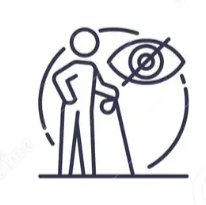
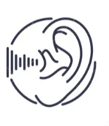
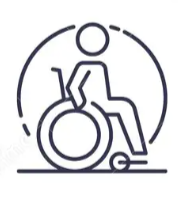

Audio descriptions, captions, and assistive technologies help people with a wide range of disabilities, including permanent disabilities, but also temporary or situational disabilities. Whether someone is blind, has a broken arm, or is watching a video without headphones in a quiet environment, accessibility benefits everyone.
This group includes people who are blind, have low vision, are colorblind, or are sensitive to bright or flashing lights. Accessibility features like audio descriptions make visual content easier to understand by turning important visual details into spoken words. For example, an audio description might explain actions happening on screen, describe facial expressions, or give a warning about strobe lights that could affect some viewers.
People who are both deaf and blind often use assistive tools such as screen readers or refreshable Braille displays. These devices convert on-screen text or audio descriptions into tactile Braille that can be read through touch. This allows users to engage with visual content in a way that fits their needs. It reflects the “Perceivable” and “Operable” principles from the WCAG’s POUR guidelines because the content is presented in multiple ways that people can access.
Simple design choices like high color contrast, consistent headings, and avoidable flashing elements also help users with low vision or color perception differences better navigate and understand what they’re seeing.

Closed captions are one of the most helpful features because they let viewers who are deaf or hard of hearing read along with dialogue and sound effects in real time. Good captions not only show who is speaking but also describe background sounds or music that add context to a scene.
Other tools, like personal listening devices (PLDs), FM systems, sound field systems, and noise-canceling headphones, can improve sound quality and reduce background noise, making it easier for people to focus on the main audio. These tools support the “Understandable” and “Robust” principles of POUR by giving people consistent access to auditory information in a form that works for them.
Together, captions and assistive listening technologies create a more equal experience by letting users choose the method that helps them engage best.

People with limited motor control, tremors, or muscle conditions often rely on tools that make digital navigation simpler. Voice recognition software lets users control their devices or type by speaking, while switch devices offer an alternative to using a mouse or keyboard. Some accessible media players also include larger buttons, keyboard shortcuts, or compatibility with adaptive controllers so users can play, pause, or skip with ease.
These tools connect to POUR’s “Operable” principle by making sure users can navigate, interact, and control content without complex movements or precise clicks. Designing pages with clear structure, keyboard shortcuts, and enough time for interaction also helps remove unnecessary barriers to access.

People with learning disabilities, attention disorders, or memory challenges benefit from accessibility features like audio descriptions, captions, and assistive technologies.
Audio description can help by explaining important visual details in a video. Hearing actions, expressions, or on-screen text described out loud adds context and can make content easier to follow.
Closed captions also support comprehension by allowing people to both read and hear information at the same time, which can be especially helpful for those who process spoken language more slowly or need reinforcement.
In addition to built-in features, many people use their own tools to better understand and remember information. For example, audio recorders and note-taking apps allow users to record lectures or discussions and listen back later. Some apps even sync notes with recordings, so students can click on their notes and hear exactly what was being said at that moment. These strategies give users more control over how they take in and review information, which can make learning more accessible.